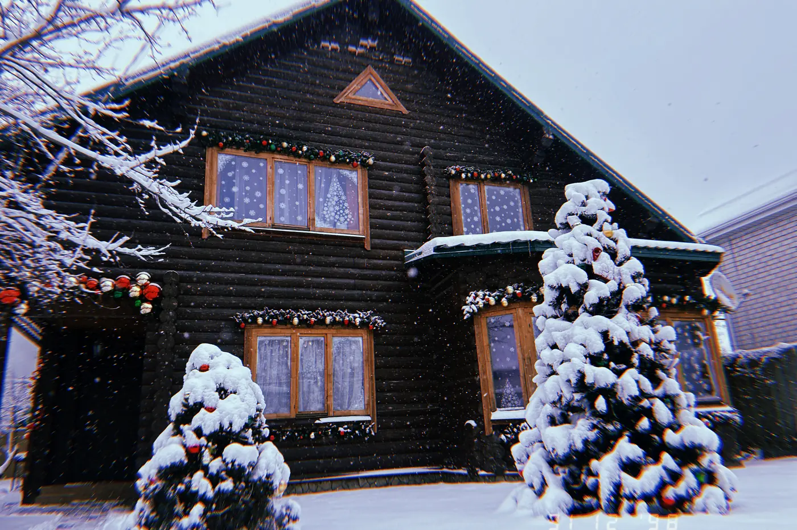
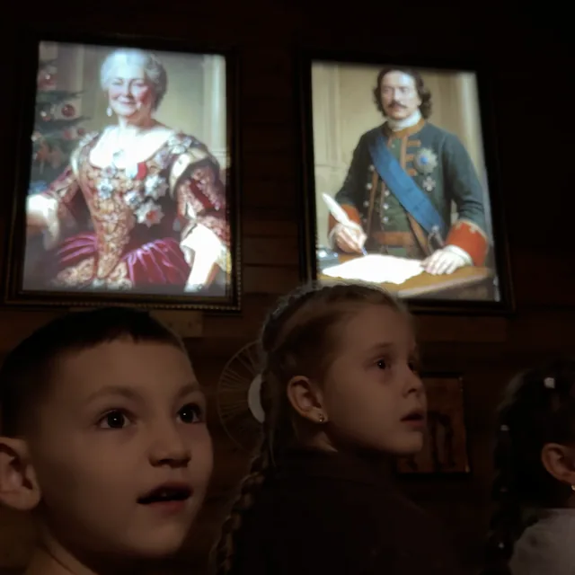
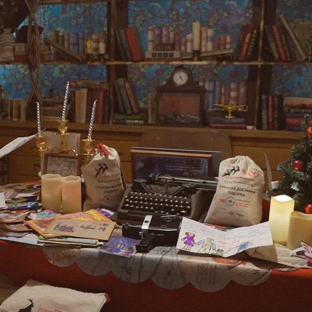
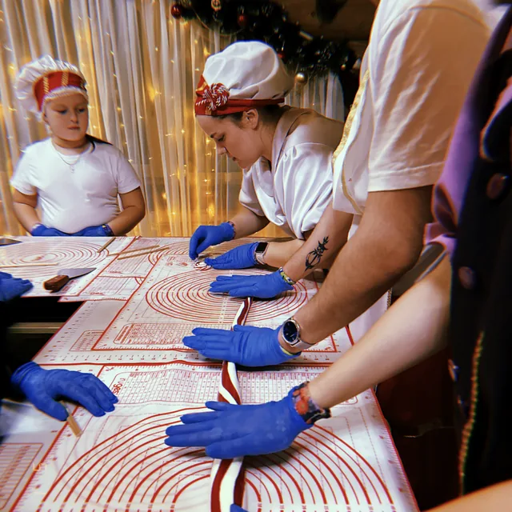
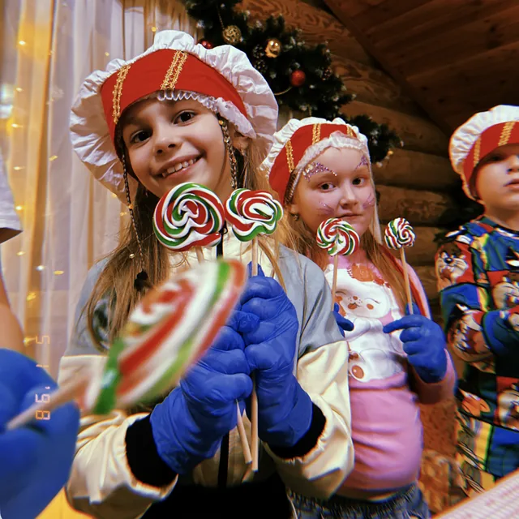
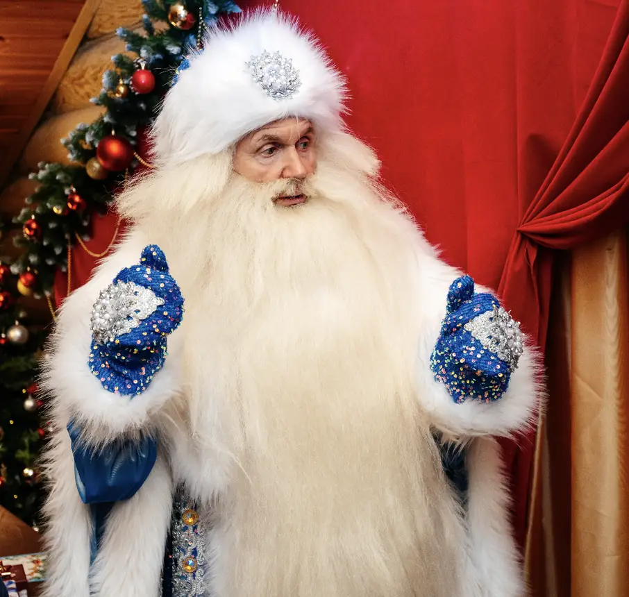

Пресс-релиз · Ставрополь · 30 октября 2026
Министерство Новогодних Дел снова в Ставрополе - с новой программой «Капсула времени»
С 27 ноября по 10 января в Ставрополе пройдёт второй сезон нашей новогодней экскурсии-шоу для детей от 4 до 11 лет. Праздник проходит в настоящей деревянной избе Деда Мороза на ул. Росгипрозем, 291. В прошлом году у нас побывали 11 тысяч детей, а в этом сезоне программа полностью новая.

Кто мы такие
Министерство Новогодних Дел проводит новогодние мероприятия для школьников с 2018 года, в этом сезоне - в семи городах России. Прошлой зимой к нам пришли 52 000 детей в пяти городах, а всего за семь лет - почти 300 000. Каждый год над проектом работают больше 150 человек: актёры, карамельщики, декораторы, хостес, менеджеры.
В Ставрополь мы впервые приехали в 2025 году. Вот чем закончился первый сезон:
- 11 000детей побывали у нас за сезон
- 5,0звёзд - оценка на Яндекс Картах
- ~300видеоотзывов от родительских комитетов
Видеоотзывы мы снимали прямо на площадке: родительские комитеты рассказывали о празднике сразу после программы. Все ролики выложены в нашей группе ВКонтакте. Можно открыть любой и послушать, что говорят родители.
Изба, а не торговый центр
Мы не проводим праздник на базах отдыха, в торговых центрах, игровых комнатах и студиях аниматоров. Под мероприятие мы берём отдельно стоящий деревянный дом на 300 квадратных метров со своей закрытой территорией и оборудуем его целиком: двор с огнями и снежными дорожками, два этажа, тёплые полы, отдельная проводка и пожарная сигнализация.
Дети снимают обувь на входе и ходят по избе в носочках. Внутри столько деталей, будто Дед Мороз обживал этот дом тысячу лет. Каждый угол - готовая фотозона, и родители обычно снимают больше, чем собирались.
«Ребёнок сразу видит, где фанера и ёлка из коробки. А в настоящей избе, где продумана каждая мелочь, даже десятилетний начинает сомневаться: а вдруг тут правда живёт Дед Мороз? Ради этой минуты мы всё и делаем».
Сергей Киричок, автор проекта
Новая программа: всё с нуля
Кто был у нас в прошлом году, знакомого не увидит. Сюжет, декорации, герои, костюмы и актёры - всё новое. В Ставрополе эта программа идёт впервые.
Сюжет такой. В Министерстве стоит машина времени Деда Мороза, к ней подключены капсулы с событиями, после которых Новый год стал таким, каким мы его знаем. В одной из них указ Петра I от 1699 года: с него год в России начинается 1 января. И вот капсулы пропали. Если их не вернуть, Новый год может просто не наступить, да и леденцы готовить станет незачем.
Дети берутся за расследование. Они попадут в тайный архив Деда Мороза, где лежат настоящие старинные книги, газеты царских времён и вещи, которые мы собирали специально под эту программу. Портреты Петра Первого и Екатерины Великой оживают на стене и разговаривают с детьми. А машина времени примет от каждого записку самому себе в будущее.


Ещё в программе велком-шоу во дворе, шоу рисования светом, пульт управления делами Деда Мороза (на его экране дети увидят себя), снег, который пойдёт по детскому заклинанию, и чаепитие в конце. Пока дети на программе, родителей угощают игристым или чаем и развлекают отдельно.
Карамель на фабричном оборудовании
Главная и самая длинная часть программы - карамельный мастер-класс. В этом году он тоже новый: другие формы, вкусы и техники. Дети работают на профессиональном оборудовании, таком же, как на кондитерских фабриках, и под присмотром сказочных карамельщиков делают леденцы, которые не отличить от тех, что продают на новогодних ярмарках. Получается у всех, даже у самых маленьких. Леденцы дети забирают домой.
Карамель настоящая, а не изомальт (сахарозаменитель), как это часто бывает. Заготовки мы варим сами, в своём цехе в Нижнем Новгороде, по ГОСТу и без эмульгаторов. За сезон это около 4 тонн карамели.


Дед Мороз, которому верят
Наши Деды Морозы - взрослые мужчины 50-60 лет. Высокие, статные, с настоящими морщинами и взрослым взглядом. Без грима. Шикарный костюм и борода длиной 70 сантиметров из натурального волоса. После встречи дети часто говорят: «А этот, видимо, настоящий».
«Студент в бороде с маркетплейса и взрослый мужчина с живыми морщинами - это два разных праздника. Дети разницу видят за секунду, поэтому на Дедах Морозах мы не экономим».
Сергей Киричок, автор проекта

Цены и как попасть
Чаще всего к нам приходят организованные группы: класс, школа, детский сад, от 20 до 40 детей. Цена зависит только от даты: будни в начале сезона дешевле, предновогодняя неделя дороже. Программа на всех датах одна. Организатору группы мы дарим детский и взрослый билет, четверо сопровождающих взрослых проходят бесплатно.
Если класс не собирается, можно прийти в сборной группе: мы соберём её из нескольких семей на одну дату. Билеты в сборную группу продаются и онлайн, на сайте.
-
Организованная группа
от 1290 до 1690 ₽ детский билет, от 20 детей -
Сборная группа
от 1590 до 1990 ₽ детский билет, на 300 ₽ дороже, чем в организованной группе -
Взрослый билет
от 600 ₽ взрослые идут по желанию, цена одна для любой группы
Цены растут на 100 ₽ 1 ноября и 1 декабря. Дата закрепляется по цене того дня, когда вы её забронировали.
Коротко
- Что
- Новогодняя экскурсия-шоу «Капсула времени» с карамельным мастер-классом
- Для кого
- Дети от 4 до 11 лет, взрослые - по желанию
- Где
- Ставрополь, ул. Росгипрозем, 291, рядом с METRO. Есть парковка для автобусов и машин
- Когда
- С 27 ноября 2026 по 10 января 2027, каждый день, кроме 31 декабря, 1 и 2 января
- Сеансы
- С 9:00 до 21:30
- Длительность
- 1 час 20 минут
- Группы
- Организованные - от 20 до 40 детей; сборные - для семей и небольших компаний
- Цена
- Детский билет от 1290 ₽, взрослый от 600 ₽
- Сайт
- mnd-stavropol.ru
- Телефоны
- +7 (987) 396-20-00, +7 (999) 444-75-69
- ВКонтакте
- vk.com/ministrystavropol, видеоотзывы - здесь
Фото - с наших мероприятий. Министерство Новогодних Дел, 2026.